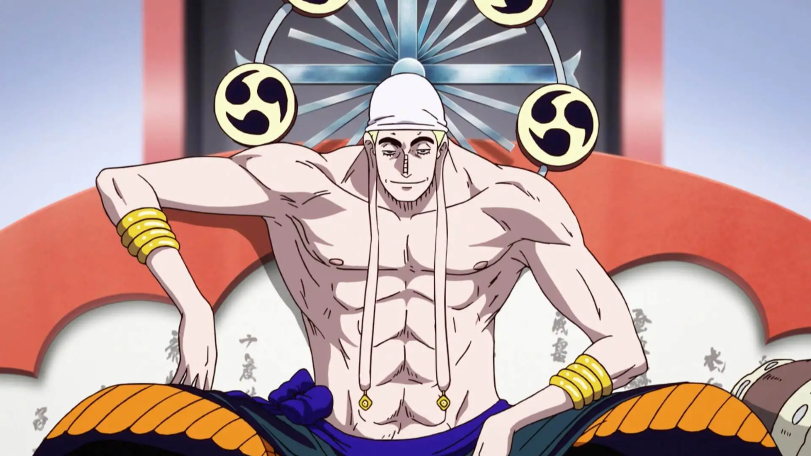

Conheça alguns dos maiores vilões de One Piece!
Os verdadeiros vilões são aqueles indivíduos que violentam ou prejudicam pessoas inocentes. Por isso, a lista que você vai ler a seguir reúne os personagens de One Piece que mais afetaram negativamente a vida dos habitantes dos quatro mares.
Kaido
Temos o pirata que está em destaque no anime e mangá. Conhecido como a Criatura Mais Forte do Mundo e também um dos poucos que espancou o Luffy no mano a mano. Além disso, vale destacar seu exército composto por inúmeros piratas, em especial os Grandes Astros. Sem contar sua Akuma no Mi do tipo zoan mítica que lhe permite se transformar em um dragão!
As pessoas costumam dizer: "Se for um contra um, Kaido vencerá". Na terra, mar e ar... entre todos os seres vivos, ele é um pirata conhecido como a "criatura mais forte"!!!
Donquixote Doflamingo
Os poderes da Hito Hito no Mi, juntamente com a personalidade manipuladora do tirânico Rei de Dressrosa, faz com que Doflamingo trate as pessoas como meras marionetes. Acredita estar acima de todos e desconhece o sentimento de misericórdia. Nem mesmo os membros da própria família, dos quais presumimos que deveriam ter algum valor emocional, foram perdoados.
O demônio celestial matou seu pai e irmão caçula por crer que ambos haviam o traído. Isso já dá uma noção de sua arrogância e explica porque ele via os habitantes de seu reino como servos insignificantes. Felizmente, Luffy cruzou seu caminho e mostrou que quem ri por último, ri melhor.
Barba Negra
Desde o começo da série, fica claro como a ambição de Marshall D. Teach é do tipo que o faz passar por cima de tudo para alcançar seus objetivos. Lembrem que quando o Comandante Thatch encontrou a Yami Yami no Mi que Barba Negra tanto desejava, ele não pensou nem duas vezes e o assassinou para roubar a fruta – atitude considerada uma grande traição dentro da cultura dos piratas.
Assim que adquiriu este poder, ele recruta uma tripulação sob seu comando e passa por vários locais, como a Ilha Banaro, sem se importar se suas lutas vão dizimar a população local. Posteriormente, a Marinha o recruta como um de seus aliados Shichibukai e ele entrega o ex-colega Portgas D. Ace ao Governo Mundial, revoltando o Yonko Barba Branca que decide enfrentar a Marinha para impedir a execução de Ace, que era como um filho para ele.
Isso dá início aos conflitos da Guerra dos Melhores, no Arco de Marineford, que resultou em uma destruição em massa de piratas, marinheiros e habitantes de Marineford, por causa dos terremotos causados pelo poder do Barba Branca, que também acabou morrendo. Mas foram as ações do Barba Negra, todas movidas por interesses pessoais, que deram origem a esta guerra que foi como um grande cataclisma na história de One Piece, pois desequilibrou completamente a realidade do Novo Mundo. No fim de tudo, Teach ainda conseguiu roubar o poder da Gura Gura no Mi e tornou-se o único pirata a possuir habilidades de duas frutas ao mesmo tempo. Nesta altura da série, ele é potencialmente o vilão mais temido por todos.
Enel
Apresentado aos fãs a partir da terceira saga de One Piece, este antagonista é o que podemos chamar de “um poço de arrogância”. Após comer a Goro Goro no Mi, ganhou poderes de eletricidade e passou a acreditar que era tão supremo e especial, que jamais poderia ser derrotado por ninguém. Com isso, Enel foi se tornando cada vez mais megalomaníaco, destruiu a Ilha de Bilka – sua terra natal –, passou a governar Skypiea em um regime ditatorial. Qualquer um que tivesse a audácia de se opor, ele matava imediatamente pois se considerava o Deus do mar dos céus.
Seu grande sonho era o de chegar à Lua e, para isso, a população era escravizada e tinha que trabalhar na construção de um barco capaz de leva-lo até o satélite. Esse cenário perdurou até o dia que os Piratas do Chapéu de Palha cruzaram seu caminho, especialmente Luffy! Nesse ponto da história, o “deus trovão” chegou ao ponto de brincar com a vida das pessoas, criando um jogo cuja regra era que Skypiea seria destruída e os últimos cinco sobreviventes partiriam com ele para Fairy Vearth. Mas, o jovem pirata do corpo de borracha deu as caras, mostrou que era invulnerável aos ataques elétricos de Enel e conseguiu vencê-lo no fim das contas.
Crocodile
Esse pirata este bem presente durante o 2º arco da história de One Piece, quando mostrou seus movimentos de réptil traiçoeiro. Fingiu-se de aliado do Governo como um dos Shichibukai, enquanto uma poderosa organização clandestina chamada Barroque Works. Essa armadilha tinha como objetivo colocar em prática seu sonho de dominar o mundo, começando pelo país de Alabasta. Para isso, pretendia matar a Princesa Nefertari Vivi, que reinava por lá. Outras características de Mr.
0 era seu jeito sádico de enfrentar os adversários e sua incapacidade de ouvir desaforos, matando qualquer um que o insultasse. Contudo, o bando dos Chapéu de Palha consegue acabar com os planos do criminoso. Os pares de assassinos chefiados por Crocodile são derrotados e seu líder é entregue à Marinha, que o prende em Impel Down. No fim da aventura, Luffy e Zoro ainda recebem uma recompensa em dinheiro por terem conseguido capturar um traidor do Governo.
Buggy
O primeiro vilão da história, Buggy aparece bem no início da jornada de Luffy e se torna uma figura recorrente ao longo do tempo. Enquanto os Mugiwara luta com inimigos cada vez mais poderosos, Buggy pode parecer menos importante, mas vale a pena lembrar o quão ameaçador ele era, mais do que cumprindo seu papel de antagonista.
O vilão comeu uma fruta chamada Bara Bara no Mi, permite que seu corpo desmorone sem ele morrer. Isso acaba sendo um problema real quando Zoro o encara e não consegue derrotá-lo, e Nami e Luffy têm que trabalhar juntos para se livrar dele. Embora não seja o mais ameaçador dos vilões de One Piece, Buggy merece seu lugar na lista de melhores vilões da história.
Arlong
Ainda mais ameaçador do que Buggy, Arlong foi a pessoa com o maior prêmio em todo o East Blue antes de ser derrotado por Luffy. Além de sua força, Arlong é uma vilã notável por seu papel em relação a Nami: apesar de fazer parte de sua tripulação, o Navigator era constantemente abusado pelo Peixeiro, que considerava todos os humanos inferiores à sua raça. Embora possa parecer fraco em retrospecto, Arlong foi um dos primeiros vilões que os fãs, junto com a gangue de Luffy, realmente levaram a sério.